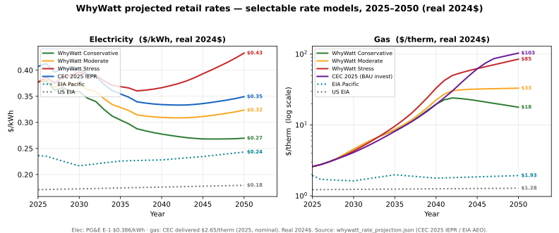

§R1 · What the rate projection does
The rate projection estimates what you'll pay per unit of energy over the next 25 years — not just today's price, but how it grows. It's a projection under stated assumptions, not a prediction.
In plain terms
Your future energy bill depends on two things: how much energy you use (handled elsewhere in WhyWatt) and the price of that energy each year. This part of the tool builds the price side — a schedule of dollars-per-kWh and dollars-per-therm for every year and month out to 2050.
We say "project, not predict" deliberately. Nobody knows the exact 2045 rate. What we can do is lay out honest scenarios — a low, a central, and a high path — each built from named, public data, so you can see the range and the reasoning instead of a single mystery number.
What you can trust
Every scenario is anchored to today's real PG&E rate and grown using published forecasts from government and expert sources (below). We also plot our curves against three independent institutions' projections so you can see we're not an outlier.
§R2 · A growing rate is a function, not a single percentage
Older tools grow prices by one fixed percentage a year forever. We use a curve that bends — faster in the near term, different in the long term — because that's how the forecasts actually behave.
In plain terms
The simple approach picks one number — say "7% a year" — and applies it every year. That's easy but wrong in a specific way: California's near-term rate pressure (wildfire costs, grid upgrades) is not the same as its long-term picture (a cleaner, cheaper power supply). A single percentage can't show both.
Instead we use a rate that grows in segments: a near-term growth rate, a mid-term one, and a long-term one, with the curve bending at meaningful dates (around 2030 and 2045 — the horizons the official forecasts themselves use). Same idea as before, just honest about the fact that the rate of increase changes over time.
§R3 · How one year's rate is built
A retail rate is the sum of two parts: the marginal cost of delivering one more unit (small) plus a residual that covers everything else on the bill (large) — not one number scaled up.
In plain terms
It's tempting to think the price you pay is the cost of the energy plus a markup. In California it isn't. We build the rate by adding two pieces:
- Marginal cost — the true cost of one more unit of energy at that hour (a few cents/kWh). This comes from the state's official Avoided Cost Calculator.
- Residual — everything else the utility must recover: wildfire mitigation, poles and wires already built, legacy contracts, public programs. This is the majority of your bill.
We add them; we do not multiply the marginal cost by a markup. Why it matters: over time the marginal piece flattens and even falls (the grid gets cleaner and cheaper), while the residual moves on its own. A markup would drag your bill down with the marginal cost — backwards.
How the residual moves: revenue requirement ÷ sales. The residual is a big pot of fixed cost (the "revenue requirement") divided across all the energy sold. Two things move it: - the revenue requirement rising (wildfire work, poles and wires), and - the amount of energy sold — the part people forget.
For electricity, sales are growing (EVs and heat pumps sell more kWh), and that growth roughly cancels out the rising revenue requirement — so electric rates stay about flat after inflation. For gas, sales are shrinking (homes leave gas), so the same fixed cost lands on fewer therms and the rate climbs. Same math, opposite direction. This is why electricity and gas pull apart.
(🚧 Fixed monthly charge is filled in when that input is harvested.)
§R4 · The three scenarios
Conservative, Moderate, and Stress — a low, central, and high path. All three come from the California Energy Commission's own 2025 forecast; Moderate is the default.

Figure: the projected retail rate for every selectable rate model — the three WhyWatt scenarios
plus the CEC and EIA reference lines — both fuels, 2025–2050 (gas on a log scale). Electricity stays
modest across all models; only gas spirals, and how far depends on the scenario. Generated from
whywatt_rate_projection.json by scripts/build_guide_charts.py.
In plain terms
The scenarios aren't made-up percentages — each is a real California Energy Commission (CEC) case, applied to your current rate.
Electricity. All three follow the CEC's official 2025 rate trajectory (including the 2026 dip when wildfire cost recovery winds down); they differ only by a small band around it. - Conservative — a bit below the CEC path; real rates drift down. - Moderate (default) — the CEC's central electricity trajectory. - Stress — a bit above; electricity rises modestly but does not spiral.
Gas. All three are the CEC's own gas-study cases for the official ("Planning-Area") electrification forecast; they differ by one policy choice — how the state recovers the cost of a shrinking gas system: - Conservative — "pruning": the state winds down gas-system spending as customers leave. - Moderate (default) — "front-load": costs recovered on a steadier schedule. - Stress — "flat / business-as-usual": the state keeps spending as if nothing changed → the death spiral (§R5). One subtlety: business-as-usual keeps gas rates lowest in the near term (it delays the spending), then overtakes the managed cases and spirals — so the lines cross around the early 2030s.
Why our lines sit a little below the CEC's published lines. WhyWatt anchors to your actual tariff (the standard PG&E E-1 electric / G-1 gas rate) and grows it along the CEC trajectory. The CEC reports the blended residential average across all rate plans, which runs a bit higher (electricity: our $0.386 vs the CEC's ~$0.417) — so our curves move with the CEC but sit ~7% below its own line. Same shape, slightly lower level.
A key correction (Aug 2026): earlier drafts had electricity rising much faster. Checking against the CEC's published forecast showed electricity should stay roughly flat in real terms — because growing electricity sales offset the rising revenue requirement. Only gas spirals.
§R5 · The gas "death spiral," plainly
As neighbors switch off gas, the fixed cost of the gas pipes is split among fewer customers — so the per-therm rate for those who remain can climb steeply.
In plain terms
The gas distribution system costs roughly the same to run whether a million homes or half a million use it. As homes electrify, that fixed cost is spread over fewer therms — so the rate per therm rises even if total spending doesn't.
Using the CEC's own gas study (residential PG&E, today ≈ $2.08/therm), our three scenarios reach these 2050 rates: - Conservative (state winds down gas spending) → ~$14/therm - Moderate (steadier recovery) → ~$27/therm - Stress (business-as-usual spending) → ~$68/therm
And the CEC's most extreme published case (fast electrification and business-as-usual spending) reaches ~$103/therm by 2050 — a ~50× increase. The spread is the whole point: how bad the spiral gets is mostly a policy choice about whether the state keeps investing in a shrinking gas system, not physics.
Important: WhyWatt models one home. Whether the neighborhood-wide decline is mild or severe is a scenario you choose, not something the tool derives from your house alone.
§R6 · Social cost overlay
A per-unit cost of carbon, methane, and health impacts, added on top of the bill so you can see total cost to society, not just your out-of-pocket bill.
The gas social impact is modeled in the WhyWatt simulation itself, not in this offline rate projection. The projection provides the rates; the simulation applies the carbon / methane / health overlay on top when it computes total cost. (The gas combustion-CO₂ factor and methane-leak parameters we harvested from the ACC gas model are available for it — see the Sources.)
§R7 · How our projection compares to others
We don't ask you to take our curve on faith — we plot it against three independent projections: US EIA, the California Energy Commission, and E3.
In plain terms
A projection is only as trustworthy as what it's checked against. We compare ours to three respected, independent sources (details in Sources below): - US EIA — the neutral US national-average rate, and WhyWatt's recommended default anchor (see the talking point below). - California Energy Commission (CEC) — the state's own official forecast; it drives our California electricity and gas curves directly. - E3 — an expert firm (they also build California's Avoided Cost Calculator); their gas death-spiral study is a second, independent high case.
The anchor thesis (why we default to the US EIA average)
When a conversation turns to "but rates might do anything," anchor it: run your analysis at the conservative US EIA national average (electricity ~18¢/kWh, gas ~$1.25/therm — about half of California's rates). Even at those modest national rates, electrification + solar comes out ahead in California. Your actual California dollar costs will be different — higher, because CA rates run ~2× the national average — which only strengthens the case, not weakens it. Anchoring to the neutral EIA number keeps the argument defensible and sidesteps "California is a special case" skepticism, while the CA-specific curves (CEC) show the real magnitude.
The gas death-spiral, benchmarked (residential PG&E, by 2050 — nominal $/therm)
The single most striking result: how far the gas rate could rise depends almost entirely on whether the gas system keeps spending as customers leave. Today ≈ $2.08/therm.
| Line on the chart | 2050 gas rate | What it is |
|---|---|---|
| US EIA national | ~$2.3 | federal reference — no CA death spiral modeled |
| EIA AEO Pacific | ~$3.4 | federal reference, our region — still ~flat |
| WhyWatt conservative | ~$14 | CEC: managed decline ("pruning") |
| E3 (2020) | ~$13.8 | E3's managed high-electrification path |
| WhyWatt moderate | ~$27 | CEC: steadier recovery ("front-load") |
| WhyWatt stress | ~$68 | CEC: business-as-usual spending ("flat") |
| CEC extreme | ~$103 | CEC: fast electrification + business-as-usual spending |
The federal references (EIA) stay near today's rate because they don't assume California's gas transition happens; the CEC cases show what does happen to remaining gas customers when it does. Our three scenarios sit inside the CEC's own range, ordered conservative ≤ moderate ≤ stress in the long run (they cross in the early 2030s, per §R4) — a check we enforce in testing.
On electricity, our lines run ~7% below the CEC's own line — same trajectory, but anchored to the E-1 tariff rather than the CEC's blended residential average (§R4). Not a disagreement, a base choice.
§R8 · Sources — what, why, and how we use each
The heart of the guide. For every input, three things: Source (what it is + where), Why (why this source), How we use it (the exact number it sets). Kept in sync as we harvest.
CPUC Avoided Cost Calculator (ACC) 2024 — built by E3
- Source: California's official Avoided Cost Calculator, 2024 edition, published by Energy + Environmental Economics (E3) for the CPUC. https://www.ethree.com/public_proceedings/energy-efficiency-calculator/
- Why: It is the state-sanctioned measure of the marginal cost of energy by hour and year — the correct, auditable basis for the "one more unit" piece of the rate, and for the within-year (seasonal) shape.
- How we use it: Sets the marginal cost
mcand its year-by-year path. We read the "Detailed Output" sheet's per-year columns (2024–2054), average over all 8,760 hours to get an annual path, and split it into the eleven ACC components. Crucially we separate them into two buckets: bill (energy, generation/transmission/distribution capacity, losses, and cap-and-trade compliance carbon the consumer actually pays) vs. social (damage carbon, methane, air quality — these feed the social overlay, not the bill). - Extraction:
scripts/build_rate_projection.py→data/rates/projection/acc_marginal_electric.json(with source sha256), harvested at CZ4 (the South Bay default home). - What it showed us (the important part): the bill marginal cost is nearly flat — about 8.6¢/kWh in 2024 rising to ~12¢/kWh by 2045 — while the raw ACC "Total" more than doubles. The difference is almost entirely rising damage carbon, which we deliberately keep out of the bill. This is why the growing part of your retail rate comes from the residual (§R3), not from the marginal cost.
ACC 2024 Gas Model — gas marginal cost (built by E3)
- Source: CPUC 2024 ACC Gas Model —
Commodity,T&D,Emissions,Methane Leakagesheets. - Why: The gas counterpart to the electric ACC; the auditable marginal cost of one therm, split the same way into bill vs social. Gas is not climate-zone specific (system-wide commodity + utility-level transport), so no CZ recalc is needed.
- How we use it:
bill_mc_gas(y) = commodity(y) + PG&E-residential marginal T&D(y)→data/rates/projection/acc_marginal_gas.json. The combustion CO₂ factor (flat 0.0053 tCO₂/therm) and methane leak adders are stored for the social overlay (combined later with an external SCC path). What it showed us: unlike electricity, the gas bill marginal rises (~$0.93 → $1.44/therm, 2024→2045) — and the gas death-spiral residual stacks on top of that, a double pressure the notebook will show against E3's curve.
CEC IEPR gas price forecast (embedded in the ACC gas model)
- Source: CEC Integrated Energy Policy Report gas price forecast — PG&E burnertip price, monthly, provided in both nominal and real dollars — carried inside the 2024 ACC Gas Model workbook.
- Why: An independent, official state forecast of the gas commodity cost, and a ready benchmark for the gas side, available without a separate download.
- How we use it: Feeds the gas marginal cost and serves as a CEC benchmark curve; the nominal and real versions also help validate our own nominal↔real conversion.
CEC 2023 IEPR GDP deflator (the nominal↔real bridge)
- Source: CEC 2023 IEPR GDP deflator series, embedded in the ACC gas workbook.
- Why: We report bills in nominal dollars by default, but some trusted sources (notably E3) report in real dollars. We need one authoritative inflation series to convert between them.
- How we use it:
scripts/build_rate_projection.py→data/rates/projection/gdp_deflator.json. Powers the guide/notebook's "real dollars" toggle so every cross-source comparison is fair.
US EIA — national-average anchor (the default talking point)
- Source: EIA current data for the US national-average residential level — electricity ~17.5¢/kWh (Electric Power Monthly, Table 5.6.A, mid-2025) and gas ~$12.4–13/Mcf ≈ $1.25/therm (Natural Gas Monthly) — grown by the AEO Reference case (~+5% real through 2050 ≈ real-flat).
- Why: A neutral, independent, federal number that isn't CA-specific — the defensible anchor for the thesis in §R7. It's the US average, deliberately not California (CA is ~2× higher).
- How we use it: Anchor line, both fuels. Nominal series built with the same CEC IEPR deflator
(~2.22%/yr) so real/nominal stays consistent with the other sources. By 2050: elec ~$0.318 nominal
(~18¢ real), gas ~$2.27 nominal (~$1.28 real) — essentially flat in real terms.
benchmarks/eia_aeo.json. - Precise regional series (AEO 2026 Pacific): the file also carries the exact EIA AEO 2026 Pacific census-division residential prices (real 2025$/MMBtu from EIA, converted): electricity ~24¢/kWh, gas ~$1.99/therm, both roughly flat to 2050. Key point for the story: the AEO reference case keeps Pacific gas flat (~$2/therm) because it does not model California's electrification-driven gas death spiral — so the federal reference and the CA (CEC) forecast diverge sharply on gas, which is exactly the risk WhyWatt is surfacing. Source: EIA AEO 2026 Table 3 (region 1-9), via the AGA compilation.
California Energy Commission (CEC) — 2025 IEPR
- Source: CEC 2025 Integrated Energy Policy Report — the "Gas Price Outlook" (fossil-gas end-use rates 2025–2050) and the California Energy Demand (CED) 2025 forecast (residential electricity and gas sales). CEC efiling docket 25-IEPR-03.
- Why: The state's own official rate and demand forecast — the natural central benchmark, and the source for how total gas throughput declines over time.
- How we use it: Provides the throughput path (the death-spiral denominator, an input the user's scenario selects) and an independent central gas-rate benchmark.
E3 — "The Challenge of Retail Gas in California's Low-Carbon Future" (2020)
- Source: E3 (Aas, Mahone, Subin, Price) for the CEC, April 2020, using E3's PATHWAYS model.
- Why: The foundational, high-quality analysis of the gas death spiral; widely cited, and E3 is the same firm that builds the ACC. Trusted enough to anchor a high case as a benchmark.
- How we use it: A benchmark gas curve (residential gas ~+80% by 2030, ~+480% by 2050 in real
terms, with ~−60% demand) — a managed high-electrification path, ≈$13.8/therm nominal by 2050.
Stored in
data/rates/projection/benchmarks/e3_pathways_2020.json.
CEC 2025 IEPR Electricity Rate Forecast — electricity central line
- Source: CEC 2025 IEPR Electricity Rate Forecast workbook (efiling docket 25-IEPR-03, tn=268239, the newer 2024$ edition), PG&E planning area, Residential sector — exact per-year rates 2024–2050 (nominal + real 2024$), plus the rate-forecast deck's stated method and assumptions.
- Why: The CA authority's own electricity forecast, as the exact machine-readable table (not read off the chart). It drives our electricity scenarios directly.
- How we use it: PG&E residential real-flat ~36¢/kWh (real 2024$); nominal 41.7¢→61.9¢.
Confirms electricity does not spiral. Our
moderatefollows this same trajectory but ~7% below it (we anchor to the E-1 tariff, the CEC to the blended residential average).data/rates/projection/benchmarks/cec_2025_iepr_electric.json.
CEC 2025 IEPR Gas Rate Forecast — gas death-spiral (extreme case)
- Source: CEC 2025 IEPR gas rate workbook tn=264063, scenario "GT AAFS 2.5 Demand Flat RR" (fast electrification + business-as-usual / flat cost recovery).
- Why: The most extreme published CEC case — the worst-case anchor for the chart.
- How we use it: Benchmark death-spiral curve — PG&E residential gas $2.59/therm (2025) →
$103.37/therm (2050), ~40×. (Confirms the earlier CPUC-cited ~$102.76 figure.) WhyWatt's own
scenarios use the milder CEC "Planning-Area" demand cases and sit below this line.
data/rates/projection/benchmarks/cec_2025_iepr_gas.json.
PG&E published tariffs — historical actuals
- Source: CPUC Advice Letters / Cal Advocates rate reports. In repo:
data/rates/pge_elec_e1.json,pge_gas_g1.json(2018→2025). - Why: Ground truth for the base rate and for checking our curve reproduces recent history.
- How we use it: Sets the base-year retail anchor and the backcast check (does our model retrace 2019→2025?).
A note on nominal vs. real dollars — and where inflation comes from
- Our default reporting is nominal (the dollars you'd actually see on a bill); a real (inflation-adjusted) toggle removes inflation so long-run trends are comparable. E3 and the CEC Figure 8 report in real dollars; EIA reports nominal — so both views are needed.
- We do not invent an inflation rate. We use the exact one E3 and the ACC use: the CEC IEPR
GDP deflator (the 2023-IEPR vintage embedded in the ACC gas workbook, base 2022), which runs
~2.2%/yr. The ACC itself works in real $2022 and converts to nominal with this deflator (it
also carries a flat 2.0% "inflation" parameter for escalating contract/IRP costs). The deflator
ultimately comes from the CEC's licensed macroeconomic forecast (IHS / S&P Global). Using the same
index means our nominal↔real conversions are consistent with E3 by construction — no second,
conflicting inflation number.
data/rates/projection/gdp_deflator.json. - Worked example (PG&E electricity, moderate): real-flat ~35¢/kWh (2024$) is ~62¢/kWh nominal by 2050 — the difference is just ~2.2%/yr inflation compounding. Both match CEC.
(🚧 Residual revenue-requirement, fixed-charge policy, and social-overlay sources added as those inputs are harvested.)
§R9 · Terms you'll see
(⬜ Short glossary of the handful of terms above — marginal cost, residual, ACC, throughput,
nominal/real — or a pointer into docs/Glossary.md. Written last, once wording is settled.)